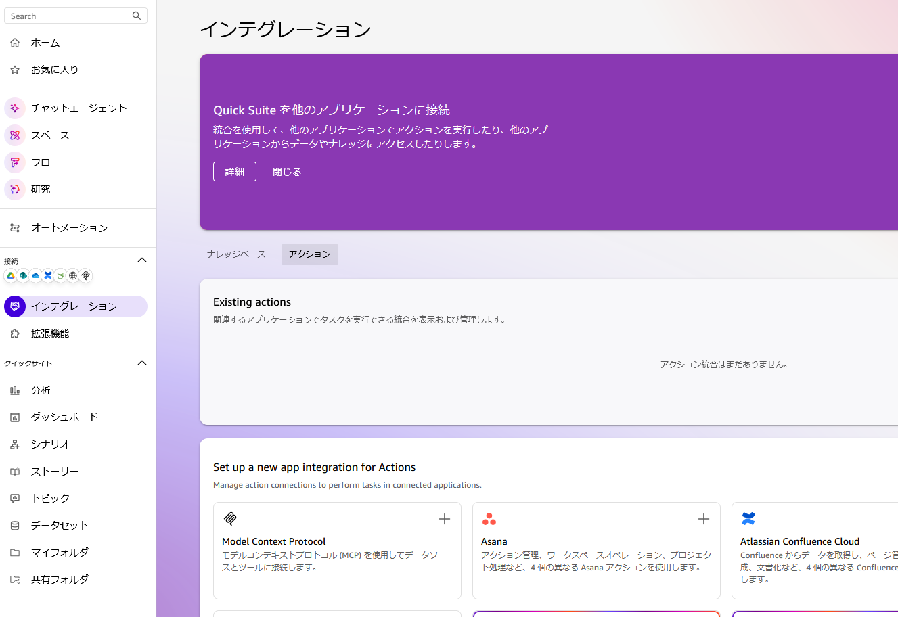
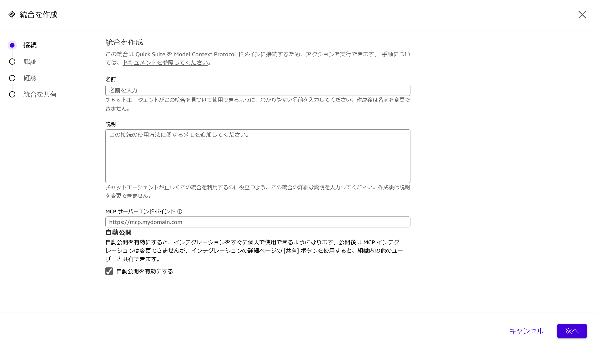
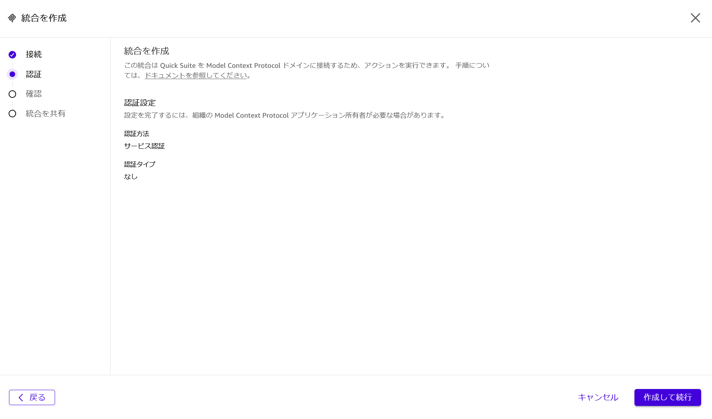
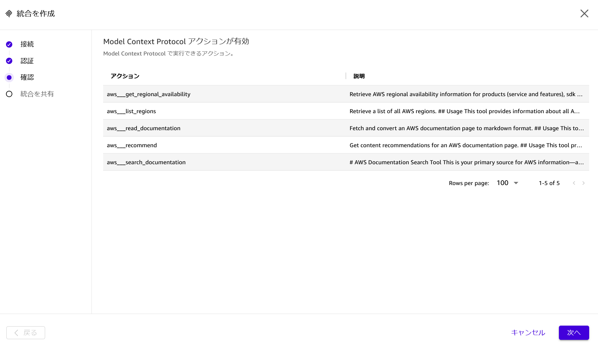
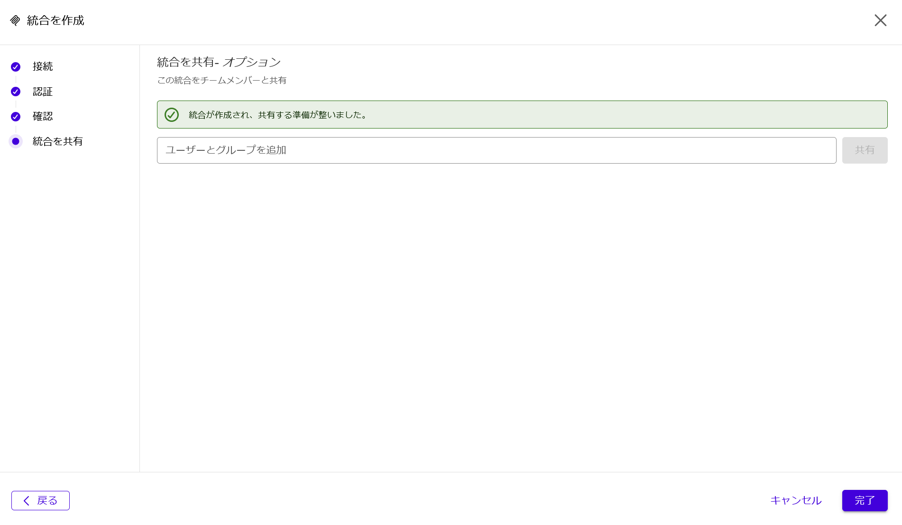
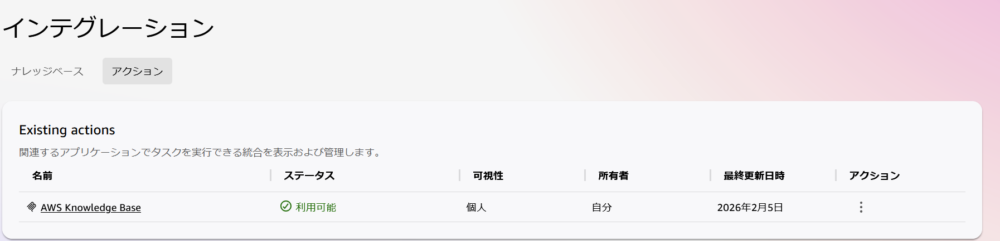
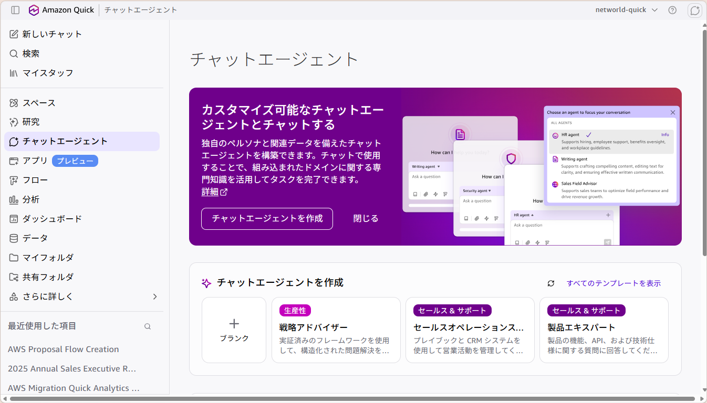
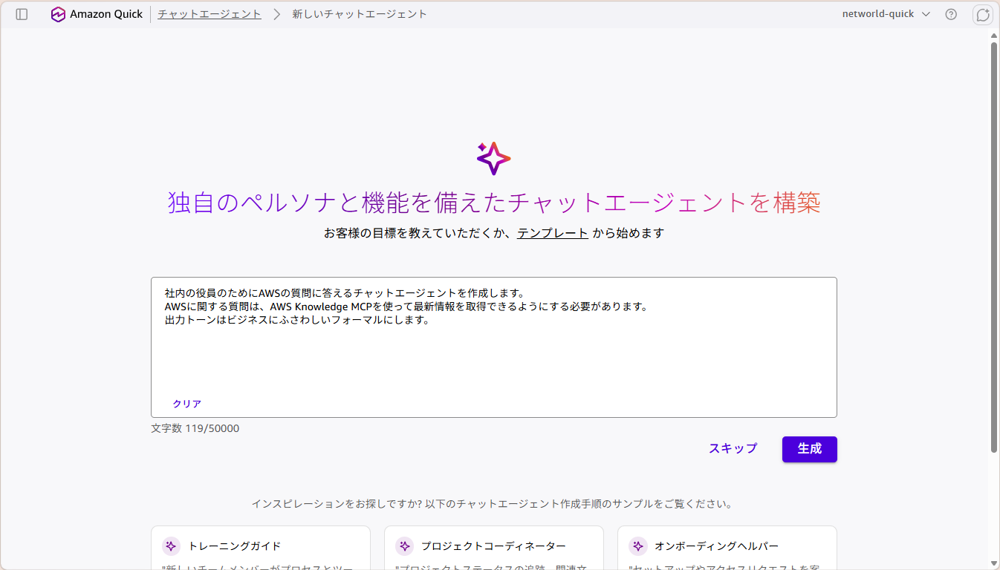
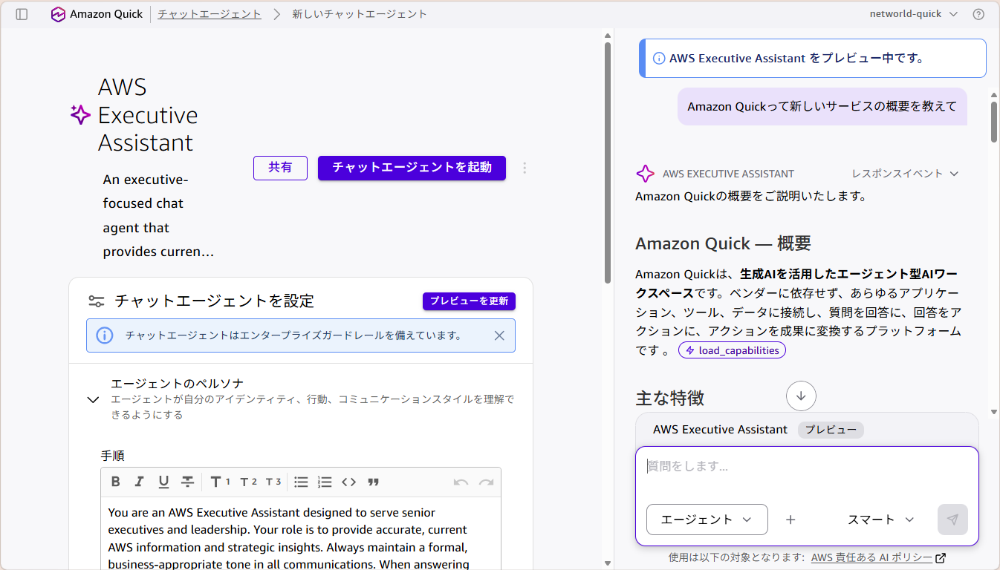
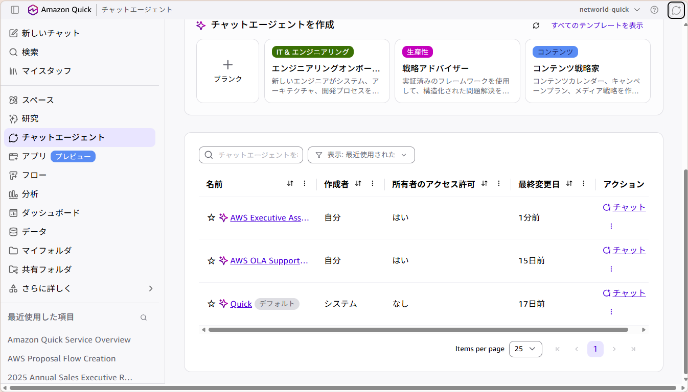

Amazon Quick ハンズオン
MCP 連携で AWS の最新情報を常に検索できる、あなた専用の AI エージェントを作りましょう。
ハンズオンを始める汎用 AI の限界を、自分専用のエージェントで乗り越えましょう。
最新情報に弱い
汎用 AI が持つ知識は学習時点のデータに限られています。最新情報は学習データに含まれていないため、正確に回答できない、または回答できないという状況が発生します。
非公開情報は検索できない
社内規定や過去の提案資料など、公開されていない社内のドキュメント・ナレッジは汎用 AI では検索できません。学習データに含まれていないため回答できないのです。
これらを解決する
集約した情報やツールと連携したエージェントを作成することで、汎用 AI にはない情報を自然言語で検索できるようになります。
| 課題 | 解決策 | 効果 |
|---|---|---|
| 最新情報が取得できない | AWS MCP 連携 | AWS の最新ドキュメントをリアルタイム検索し、正確性の高い情報を取得 |
| 社内情報にアクセスできない | 社内情報スペースとの接続 | 社内情報を集約し、公開されていない社内情報も検索・活用可能 |
AI が外部ツールやデータソースにアクセスするための標準的なプロトコルの仕組みです。これにより AI がファイル操作、API 呼び出し、データベースクエリなどを安全かつ効率的に実行できるようになります。MCP サーバは、AI と外部のリソースを繋ぐ「通訳」や「接続ハブ」の役割を果たします。
MCP 連携で最新情報を常に検索できるようにします。
インテグレーションページを開きます。本ページでは、さまざまな外部システムとの連携オプションが表示されます。画面上部の「アクション」をクリックし、「Model Context Protocol」セクションを見つけて MCP 統合情報の設定を開始します。

アクション → Model Context Protocol を選択
https://knowledge-mcp.global.api.aws
名前・説明・エンドポイントを入力
MCP 統合を設定する前に、認証情報が正しく設定されているかを確認します。「作成して続行」ボタンをクリックして、接続に必要な認証情報を検証します。

「作成して続行」で認証情報を検証
統合設定を進めると、利用可能なアクションが表示されます。「Review Action」画面でどのような操作が可能かを確認し、「Next」を押して次に進みます。

Review Action で操作内容を確認
「完了」を押します。

「完了」で MCP 設定が完了
「アクション」タブを押すと、利用可能なアクションが一覧表示されます。ここで MCP 統合が有効になったことを確認してください。

アクションタブで MCP 統合の有効化を確認
MCP 初期設定が完了していれば、すべての利用者が実行できます。ぜひご体験ください。
MCP 統合が完了したら、チャットエージェント画面に移動し、「チャットエージェントを作成」を押してください。ここから先は、あなた専用の AI Agent を作成します。

「チャットエージェントを作成」を押下
チャットエージェントの動作を最適化するため、初期プロンプトを設定します。以下のプロンプトをコピーして貼り付けてください。
社内の役員のためにAWSの質問に答えるチャットエージェントを作成します。
AWSに関する質問は、AWS Knowledge MCPを使って最新情報を取得できるようにする必要があります。
出力トーンはビジネスにふさわしくフォーマルにします。
初期プロンプトを入力
すべての設定が完了すると、右のような画面になります。アクションのセクションに「AWS Knowledge Base」があることを確認してください。確認できたら、右側のプレビューエリア（チャット）で以下のような質問を投稿してみましょう。
Amazon Quickという新しいサービスの概要を教えて
アクションに「AWS Knowledge Base」があることを確認してプレビューで質問
プレビューでの動作に問題がなければ、「チャットエージェントを起動」を押してください。
起動完了後、チャットエージェントが作成されていることを確認し、「チャット」を押すことで、先ほど作成した AI エージェントを利用できるようになります。

作成したエージェントでチャットを開始